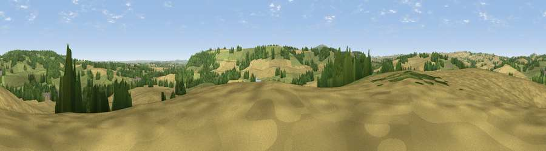

Viewpoint near Monkhopton
#27861 in England · top 71% of its area beats it · near MonkhoptonThe view, rendered

A 360° render of this exact spot computed from the terrain model, tree cover and land cover — summer colours, afternoon light, calibrated against photographs of famous viewpoints. Real trees, hedges and buildings will differ in detail.
The panorama
Grey silhouette: terrain skyline in each direction (720 bearings, Earth curvature and refraction included). Dashed green: skyline with trees (+15 m) and buildings (+8 m) as obstacles. Blue strip: how far the ground is visible on each bearing.
Where the view opens
Wedge length = distance to the farthest visible ground on that bearing (vegetation-aware). Rings at 10, 25 and 50 km.
What fills the view
50% cropland · 34% grassland · 16% woodland ·
Angular shares of the visible panorama (visual magnitude), not map area. Landscape diversity 0.46 (0–1 Shannon).
Key numbers
More beautiful places nearby
The staircase of upgrades: each row has a higher view potential than everything closer. Driving times are estimates from straight-line distance, calibrated against real road routing — check an actual route before setting out.
| Place | Direction | Drive | Score |
|---|---|---|---|
| Viewpoint near Monkhopton | S · 2 km | ~4 min | 57.3 |
| Aston Hill | SE · 2 km | ~6 min | 60.9 |
| Viewpoint near Monkhopton | SE · 3 km | ~7 min | 61.8 |
| Bourton Westwood | WNW · 5 km | ~11 min | 66.1 |
| Viewpoint near Much Wenlock | N · 6 km | ~12 min | 69.2 |
| Viewpoint near Harley | NW · 6 km | ~13 min | 76.8 |
| Viewpoint near Harley | NW · 6 km | ~14 min | 79.9 |
| Viewpoint near Abdon | SSW · 10 km | ~19 min | 82.6 |
52.55147, -2.52167 · source: screening · position refined by local search. Computed location — check access rights before visiting.